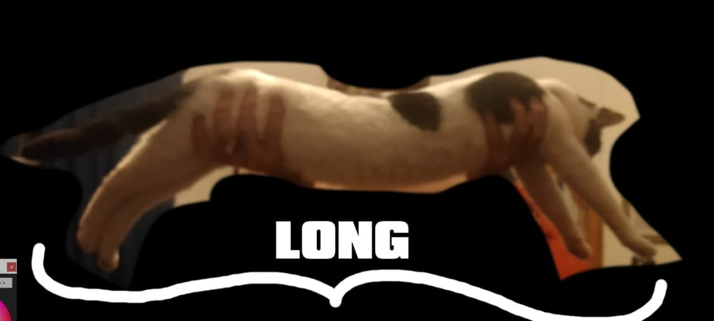
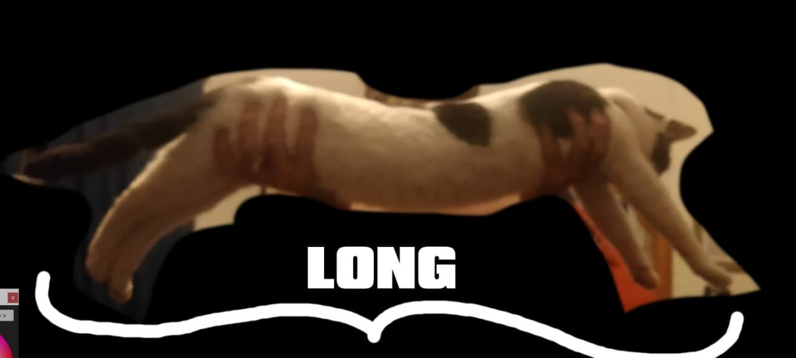
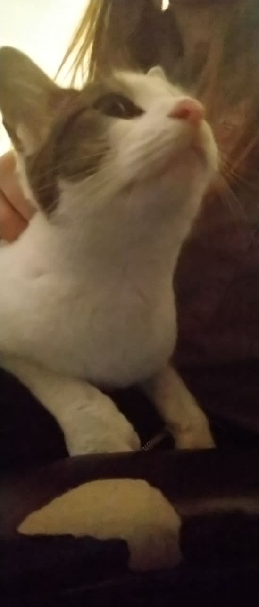
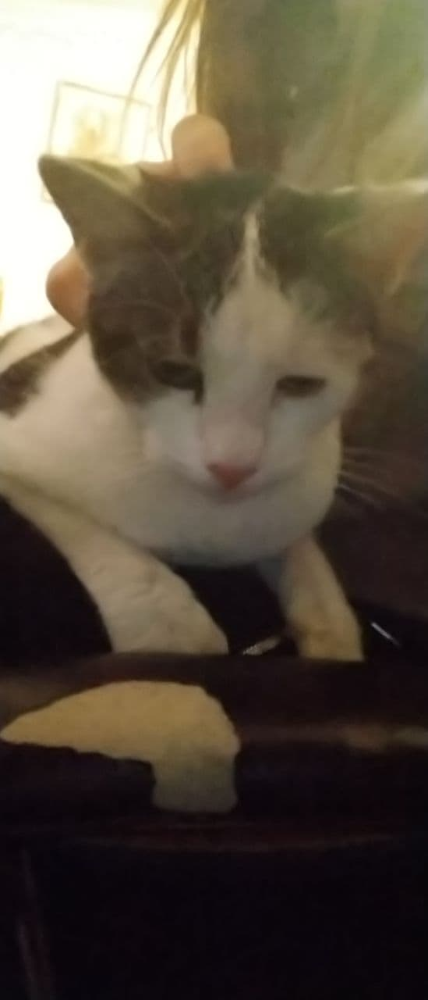
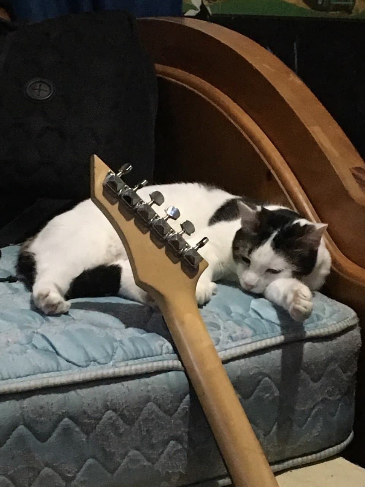
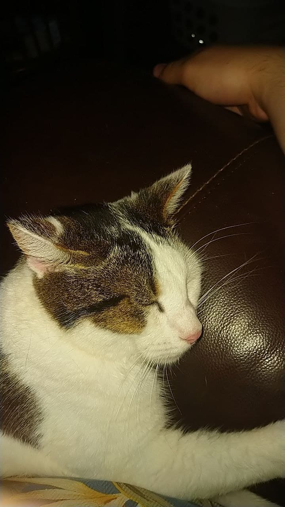
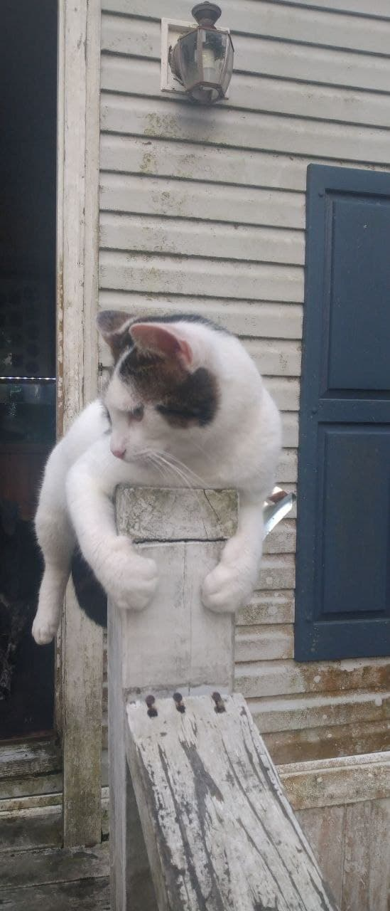
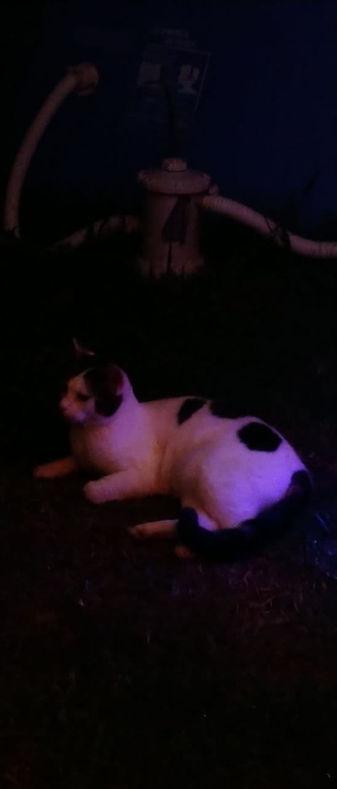
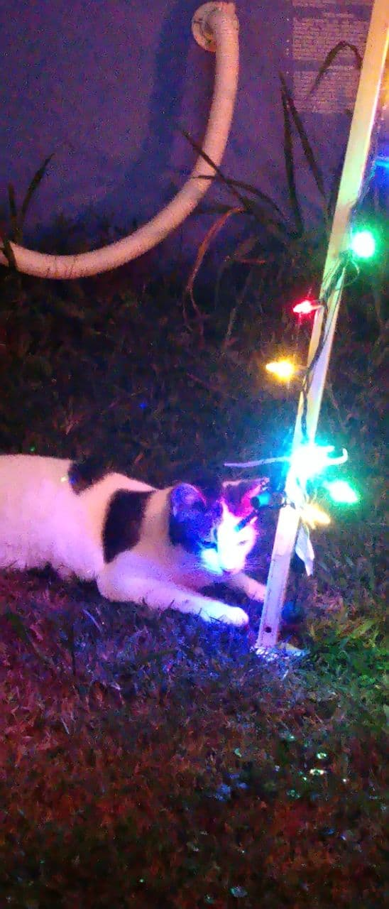
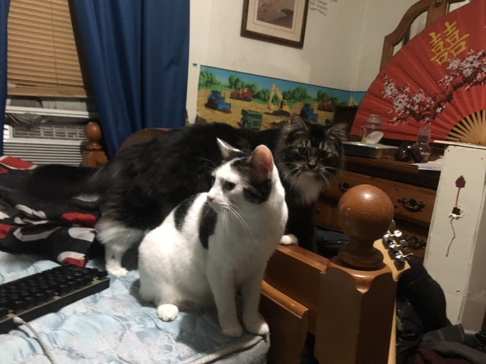

Mark fact: he rly likes roast beef
Mark fact: he does not do his job and catch mice but that's okay

Mark fact: when he stretches out his paw if u put ur finger on big bean he will hold your finger 
Mark fact: i have been trying to teach him how to open doors and he has not yet caught on but when he does? world domination followed immediately by a perfect utopia
Mark fact: he loves christmas! he used to sleep under the tree by the presents when all the lights were on
Mark fact: mark is his nickname his full name is maximillion archduke diego josé francisco de paula juan nepomuceno maría de los remedios cipriano de la santísima trinidad ruiz y ferdinand the younger the third the great
Mark fact: he has had many brothers and sisters (here he is pictured with reginald). currently he has 3 brothers and 2 sisters (including dogs)